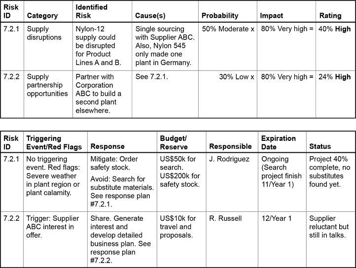

Risk identification must be comprehensive but focused on critical risks. It is an iterative process — new rounds of identification are needed as circumstances change.
Each risk should be documented with:
The scope and time frame of each risk must be well understood before selecting an appropriate response.

Supply chain risks include loss of tangible assets (property, inventory, money) and intangible assets (intellectual property, reputation).
Click card to flip · Use arrows or shuffle to practise